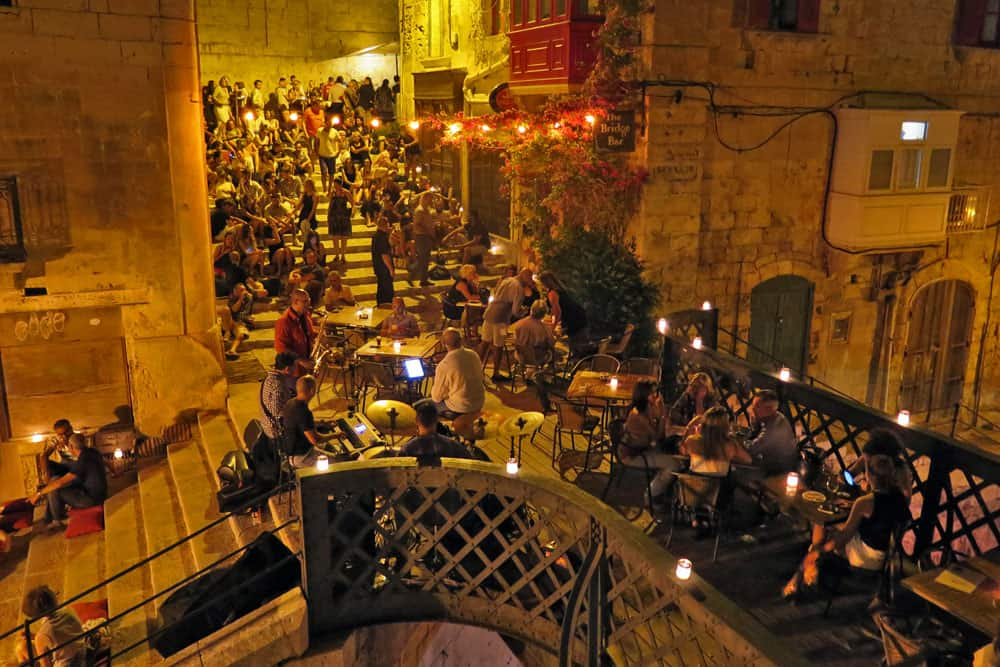

Consigli Pratici per Viaggiare a Malta
Preparati al meglio per la tua avventura maltese con questi consigli essenziali, dal prima di partire fino a come muoverti sull'isola e goderti al meglio ogni momento.
Quando Andare? Il Periodo Migliore e il Clima
Malta gode di un clima mediterraneo con estati calde e inverni miti. Il periodo migliore dipende dalle tue preferenze:
- Primavera (Aprile-Maggio): Ideale per escursioni e visite culturali, con temperature piacevoli e fioriture. Il mare è ancora un po' fresco ma balneabile verso fine maggio.
- Estate (Giugno-Agosto): Perfetta per il mare e la vita notturna. Le temperature possono superare i 30°C. Alta stagione, quindi più affollato e costoso.
- Autunno (Settembre-Ottobre): Ancora ottimo per il mare, con temperature più miti e meno folla rispetto all'estate. Ottimo per snorkeling e immersioni.
- Inverno (Novembre-Marzo): Mite ma più piovoso. Ideale per chi cerca tranquillità, musei e passeggiate. I prezzi sono più bassi.
Le temperature medie vanno dai 15°C in inverno ai 28-30°C in estate.
Quanto Costa Viaggiare a Malta? Budget di Viaggio
Malta è generalmente una destinazione con costi accessibili rispetto ad altre mete europee, ma molto dipende dal periodo e dallo stile di viaggio.
- Volo: I prezzi variano molto in base alla provenienza e alla stagione (da 50€ a 250€+ A/R). Prenotare in anticipo è sempre consigliato.
- Alloggio:
- Ostelli/Guesthouse: 15-30€/notte
- Hotel 3-4 stelle: 50-150€/notte
- Appartamenti: 40-100€/notte
- Cibo:
- Pasti economici (Pastizzi, ftira): 1-5€
- Ristoranti medi: 15-30€ a persona
- Cena di pesce: 30-50€ a persona
- Trasporti: Molto economici con gli autobus (1.5€-2€ a corsa), o abbonamenti settimanali (21€). App di ride-sharing (Bolt, Uber) convenienti.
- Attività/Ingressi: La maggior parte dei siti storici ha un costo d'ingresso (5-15€). Esistono pass combinati (es. Heritage Malta Pass) che possono far risparmiare. Escursioni in barca (es. Comino) variano da 20-40€.
Cosa Portare in Valigia: Essenziali per Malta
- Abbigliamento:
- Estate: Abiti leggeri, costumi da bagno, sandali, cappello, occhiali da sole.
- Primavera/Autunno: Abiti a strati (t-shirt, felpa, giacca leggera), costume, scarpe comode per camminare.
- Inverno: Maglioni, giacca impermeabile, ombrello.
- Scarpe Comode: Essenziali per esplorare città e siti archeologici. Scarpe da scoglio se prevedi di fare il bagno in zone rocciose.
- Protezione Solare: Crema solare ad alto fattore (fondamentale tutto l'anno!), doposole.
- Adattatore Universale: Se i tuoi dispositivi non hanno la spina di tipo G (britannica).
- Zaino leggero: Per le escursioni giornaliere, con acqua e snack.
- Kit di Primo Soccorso: Medicinali personali, cerotti, disinfettante.
- Macchina Fotografica: Per catturare i panorami mozzafiato.
Restare Connessi: Wi-Fi e SIM Card
- Wi-Fi: Molti hotel, ristoranti e bar offrono Wi-Fi gratuito. Nelle aree turistiche, spesso trovi reti pubbliche.
- SIM Card Locale: Se prevedi di usare molto internet, puoi acquistare una SIM prepagata maltese. I principali operatori sono GO, Epic e Melita. Offrono pacchetti convenienti per dati e chiamate.
- eSIM: Un'ottima alternativa per i telefoni compatibili. Puoi acquistarla online prima di partire (es. Airalo) e attivarla al tuo arrivo, evitando il cambio fisico della SIM.
- Roaming: Verifica le tariffe di roaming con il tuo operatore telefonico. All'interno dell'UE, il roaming è generalmente gratuito (Roam Like At Home).
Shopping e Souvenir: Cosa Acquistare a Malta
Malta offre una varietà di prodotti locali e souvenir unici:
- Artigianato: Pizzi di Gozo, vetro soffiato di Mdina Glass, ceramiche e gioielli d'argento filigranato.
- Prodotti Alimentari: Miele maltese, Gozo Cheese (ġbejna), vino locale, liquori (come il Bajtra, liquore al fico d'india).
- Souvenir Tipici: Modelli di luzzu (le barche colorate), statuette dei Cavalieri di Malta, repliche di templi megalitici.
- Dove fare shopping:
- Valletta: Vie principali come Republic Street per negozi di marca e souvenir.
- Sliema: Centri commerciali (The Point, Plaza Shopping Centre) e negozi alla moda.
- Mdina/Rabat: Negozi di artigianato e prodotti locali.
- Marsaxlokk: Mercato della domenica per pesce fresco e prodotti locali.
Moneta, Lingua e Fuso Orario
- Moneta: La moneta ufficiale è l'Euro (€).
- Lingue: Le due lingue ufficiali sono il Maltese e l'Inglese. L'italiano è comunque abbastanza diffuso e compreso.
- Fuso Orario: Stesso fuso orario dell'Italia (UTC+1, UTC+2 con l'ora legale).
- Acqua del Rubinetto: L'acqua del rubinetto a Malta è dissalata e non è generalmente consigliata per bere, anche se è potabile. Meglio optare per acqua in bottiglia.

Come Muoversi a Malta
- Autobus Pubblici: Sono il mezzo più economico e diffuso. Il biglietto si acquista a bordo (1.5€ fuori stagione, 2€ in estate). Esistono anche carte prepagate per più giorni/corse.
- App di Trasporto (Ride-sharing): Bolt, eCabs, Uber e Ryde sono molto popolari e convenienti rispetto ai taxi tradizionali. Scarica l'app per prenotare facilmente.
- Noleggio Auto: Offre massima libertà, ma attenzione alla guida a sinistra! Il traffico può essere intenso. Si consiglia Rentalcars per comparare offerte.
- Noleggio Scooter Elettrico: Whizascoot è un'opzione comoda ed ecologica per brevi tragitti.
- Taxi Bianchi: Sconsigliati per la reputazione e i costi più elevati. Se li usi, concorda il prezzo prima di partire.
Sicurezza e Consigli Ambientali
- Sicurezza Generale: Malta è un paese sicuro. Fai attenzione nei quartieri notturni come Paceville e Bugibba, e alle truffe sui pagamenti con carta (controlla sempre l'importo). Non portare oggetti di valore inutili.
- Protezione Solare: Il sole è forte tutto l'anno. Usa sempre crema solare ad alto fattore, cappello e occhiali da sole. Particolare attenzione ai bambini. Controlla l'indice UV.
- Bandiere da Balneazione:
- Rossa e Gialla: Zona sorvegliata da bagnini.
- Verde: Zona tranquilla e sicura.
- Gialla: Rischio moderato.
- Viola: Presenza massiccia di meduse (non fare il bagno!).
- Rispettare l'Ambiente: Evita di lasciare rifiuti, rispetta la flora e la fauna locale, e cerca di essere un turista responsabile.

Consigli Extra per un'Esperienza Autentica
- Esplora i Sentieri Meno Battuti: Non limitarti alle attrazioni principali. I villaggi, le calette nascoste e le escursioni guidate possono rivelare la vera Malta.
- Evita gli Orari di Punta: Per le attrazioni più famose, visita la mattina presto per evitare la folla.
- Cucina Locale: Assaggia i piatti tipici come il Pastizzi, il Ftira, il Coniglio fritto e i frutti di mare freschi.
- Cultura e Tradizioni: Malta è un paese molto credente e con una forte identità politica. Sii cortese e rispetta le usanze locali. Evita discussioni su religione, politica e corruzione.
- Vita Notturna (Paceville): Se ti piace la festa, Paceville è il centro principale. L'ingresso nei club è spesso gratuito e le bevande sono più economiche che altrove. Sii comunque vigile.